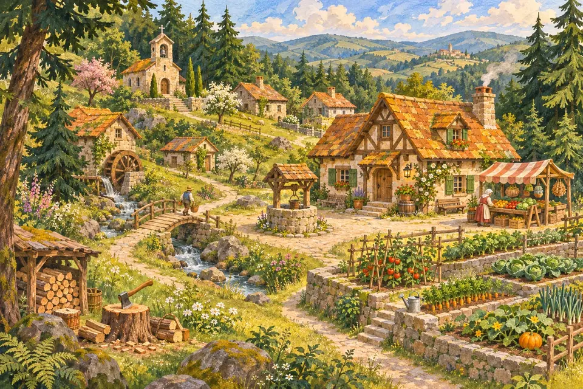

Forestiers
Prends une charrette libre et pars en forêt. Tu peux rentrer avec ce que tu as déjà récolté ou attendre que la charrette se remplisse. Au retour, le bois rejoint le dépôt de ta guilde.
Le guide du village
Des arbres à couper, des charrettes à fabriquer et une ville à faire grandir. Choisis ton métier et viens jouer avec le chat de CamariX.
Commencer ma première partie
Quand la journée de jeu est ouverte sur la chaîne de CamariX, ouvre l’extension. Si Twitch te le demande, autorise le partage de ton identité pour retrouver le même personnage dans le jeu et dans le chat.
Dans Guilde, rejoins les Forestiers pour récolter du bois ou les Menuisiers pour le transformer.
Regarde la durée, l’énergie, les matériaux et la paie affichés, puis clique sur Lancer. Tu peux suivre ton personnage sur la carte du live.
Depuis le chat, !eco moi affiche ton personnage et !eco aide te donne les commandes.
Prends une charrette libre et pars en forêt. Tu peux rentrer avec ce que tu as déjà récolté ou attendre que la charrette se remplisse. Au retour, le bois rejoint le dépôt de ta guilde.
À l’atelier, transforme le bois en planches. Avec ces planches, tu peux fabriquer des meubles ou une charrette qui permettra à ta guilde de faire plus de tournées.
Ouvre Marché pour voir ce que les habitants, les guildes et la mairie proposent ou recherchent. Choisis la quantité qui t’intéresse. Le marché affiche aussi la commande à utiliser dans le chat.
Quand une transaction est validée, les membres de la guilde qui vend peuvent choisir Faire une livraison dans Guilde. Le jeu choisit le prochain chargement et sa destination.
La mairie achète les matériaux dont elle a besoin pour ses chantiers. Une fois les matériaux disponibles, ouvre Mairie et construis un module.
Chaque module terminé te rapporte un salaire et fait avancer le chantier. De live en live, les habitants réunissent assez de bois, de planches et de travail pour ouvrir de nouveaux lieux.
De l’arbre à la carrière. Les Forestiers coupent le bois, les Menuisiers le débitent en planches et les habitants s’en servent pour bâtir la ville ensemble.
Tu peux interrompre une récolte et laisser à ton personnage le temps de revenir au dépôt. Une fabrication ou un module de chantier va jusqu’au bout. Le jeu vérifie et réserve au départ l’énergie, les ressources et la paie nécessaires.
Tu es payé au temps passé, au tarif horaire de ta guilde ou de la mairie. Les déplacements ne coûtent pas d’énergie. Le panneau affiche le coût des actions de travail avant que tu les lances.
Les marchandises mises en vente sont réservées. Si ta guilde retire une offre, la quantité encore disponible redevient utilisable à l’atelier. Les quantités déjà achetées restent réservées pour la livraison.
Tu commences comme novice. Après trois jours de jeu dans ta guilde, tu deviens compagnon et tu peux la quitter. Les autres guildes sont accessibles dès le jour de jeu suivant. Si tu rejoins ton ancienne guilde, tu repars comme novice.
Les membres qui remplissent les conditions du scrutin élisent leur chef. Le vote se fait dans le chat avec !vote suivi du numéro du candidat. Le chef peut nommer un adjoint.
Préviens CamariX en message privé sur Twitch. En jeu comme dans le chat, respecte les autres joueurs et les décisions de modération.